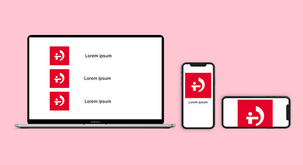
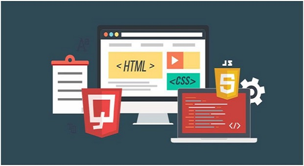

Las bases del front end
A pesar de que hay varios lenguajes que se usan en el frontend, nosotros nos fijaremos en tres elementos: HTML, CSS y Javascript (aunque HTML y CSS no son lenguajes de programación propiamente dichos).
¿Qué es Java Script?
- 
¿Qué es HTML?
- 
¿Qué es CSS?